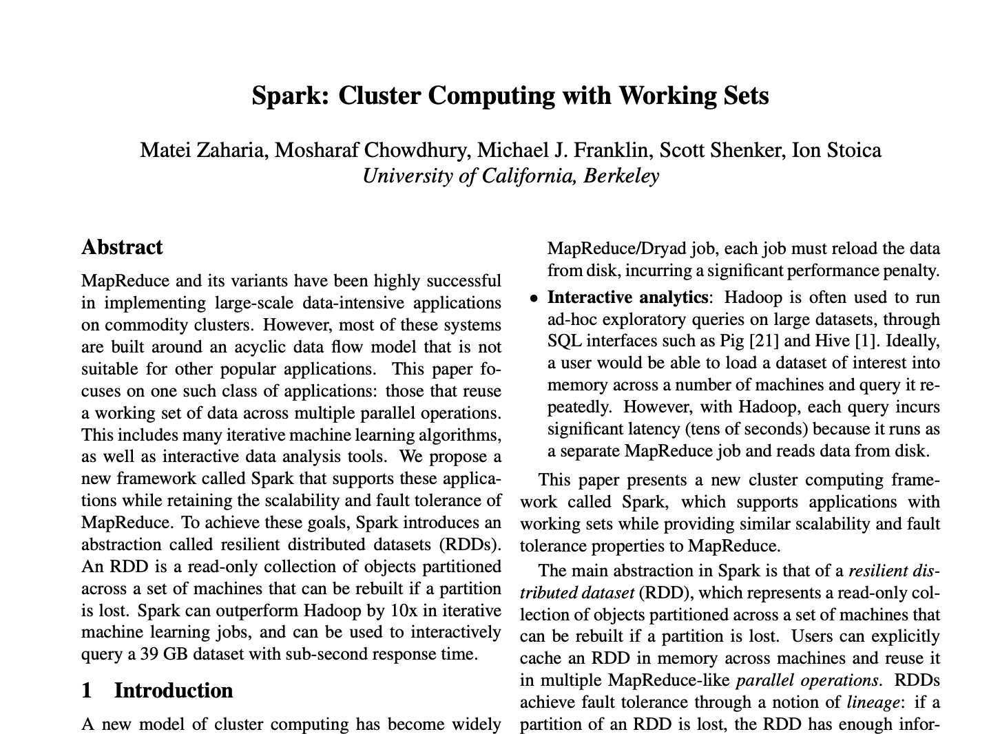
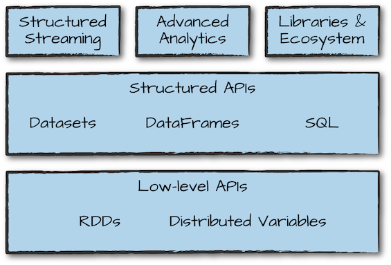
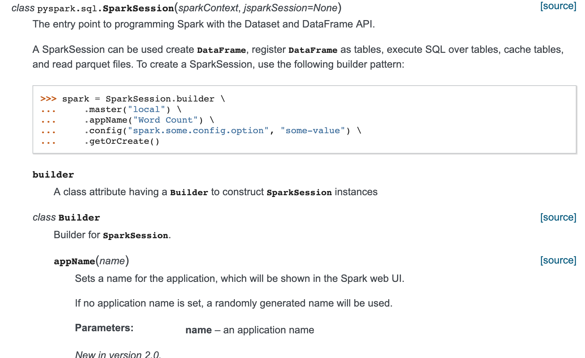
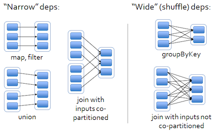
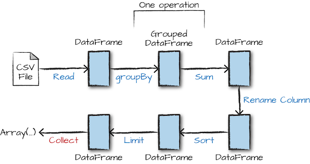
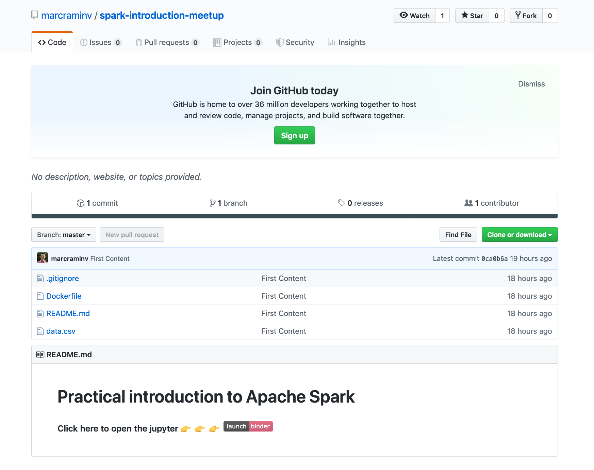

class: middle, center # Practical Introduction to Apache Spark --- # About Me -- I'm not... -- * A guru in Apache Spark -- * A writer, I didn't write 📕 about Spark -- * 10x Engineer --- # About Me I am... * @marcraminv in Twitter * 0.8976x Data Engineer last 4 years * ScalaBcn & SparkBcn co-organizer * Everis, Billy Mobile & LIDL ... Now IntentHQ -- And THIS IS MY FIRST MEETUP 🤦♂️🎉 --- # About you .p-about-you[ 1. Go to [https://www.mentimeter.com](https://www.mentimeter.com/s/08e27025a9461ed3ddf1e50657a3398f/77bfce33cd6f) 2. Put the code 3. Vote 🖖🙂 ] --- # Today we are going to talk... * [What is Spark](#definition) * [How it works](#architecture) * [SparkSession](#entry) * [Operations](#operations-1) * [Your first Spark Application](#code) --- class: middle, center # Time ago when people were using <br> Map and Reduce... --- name: definition # What is Apache Spark  --- # What is Apache Spark -- **Web definitions** > *Spark is a unified analytics engine for large-scale data processing* -- > *Fast and general-purpose cluster computing system* -- **Books** > *Unified computing engine for parallel processing* -- > Multiple language support: Scala, Python, SQL, R, Java, .Net -- **Then... ** - Unified engine - Parallel/cluster computing system - Multiple platform --- # What is Apache Spark  .footnote[[_Oreilly Spark Definitive Guide Preview_](http://spark.apache.org/docs/latest/api/python/pyspark.html)] --- name: architecture # How it Works .center[] .footnote[[_Spark Cluster Overview_](http://spark.apache.org/docs/latest/cluster-overview.html)] --- class: middle, center # SparkSession => Unit --- name: entry # EntryPoint: SparkSession  .footnote[[_Python API_](http://spark.apache.org/docs/latest/api/python/pyspark.html)] --- # EntryPoint: SparkSession * This is the door to code your applications * Access to the Spark world... ```scala >>> spark = SparkSession.builder \ ... .master("local") \ ... .appName("Word Count") \ ... .config("spark.some.config.option", "some-value") \ ... .getOrCreate() // generate a 1 column with N rows spark.range(100) // create a custom dataframe frm DataTypes spark.createDataFrame(...) // build a sql expression spark.sql("SELECT 'HOLA IRONHACK 👋'") // read from csv file spark.read.csv(...).load() ``` --- # Operations **Transformations** * Narrow (isolated operation) * Wide (network communication between workers)  .footnote[.red.bold[*]All transformations in Spark are lazy] --- # Operations **Actions** Return a value to the driver program after running a computation on the dataset  .footnote[_Source: Spark Definitive Guide _] --- name: code class: middle, center # Time to code  --- name: code class: middle, left # Start with... ```python from pyspark.sql import SparkSession spark = SparkSession.builder.appName("SimpleApp").getOrCreate() ``` # Questions to answers * Top 5 of best rated players * Top 5 of pokemon with best attack * Top 5 of pokemon group by `pokemon_type` * Top 5 of players group by teams